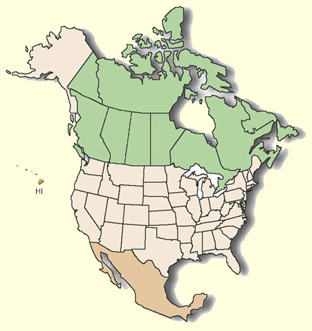

North America
Click the country you would like to locate your artist from

We want you to be able to know more about the artist themselves. This page will show you where the artist is from and a little bit of background information about them.
Return to Home page